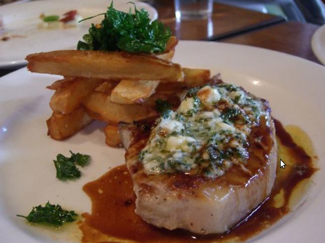

Pork Chops and Potatoes

Description
Tender and easy to make, this delicious wonder is sure to
delight the family.
Takes only 1.5 hours total to make.
Ingredients
- 5 tablespoons butter
- 6 boneless thick-cut pork chop
- salt and ground black pepper to taste
- 2 teaspoons Dijon mustard
- ½ cup diced onion
- 6 potatoes, peeled and thinly sliced
- 2 cups chicken brotha
- 1 cup shredded Cheddar cheese
Steps
- Preheat oven to 350 degrees F (175 degrees C).
- Melt 1 tablespoon butter in a skillet over medium heat.
- Season pork chops with salt and pepper.